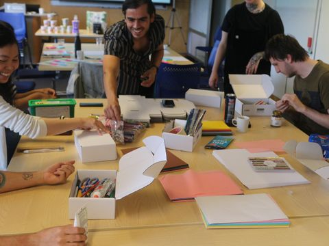
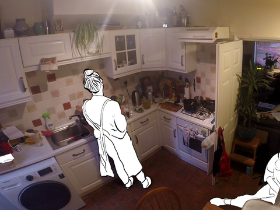
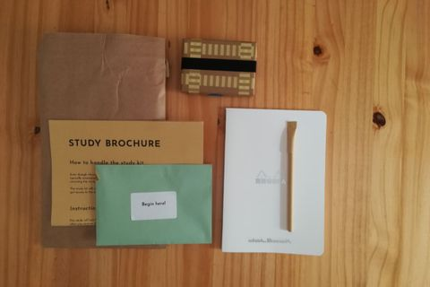
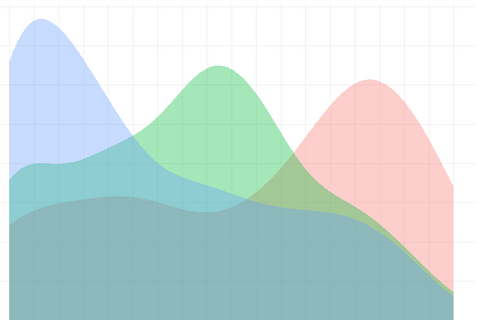
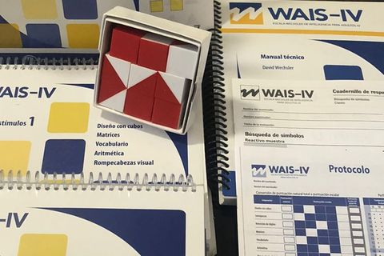

I am a user experience researcher. My PhD work was focused on creating smart versions of consumer-packaged goods using data as a resource for design. I have over ten years of experience conducting human-centred research in academic and industry settings in the fields of experimental psychology, cognitive neuroscience, and human-computer interaction. I've completed internships at Johns Hopkins University, Philips, and Unilever, and conducted studies in Mexico, the USA, the Netherlands, and the United Kingdom. I've also co-authored several papers, and have contributed to various industry projects.
Below is a selection of skills and methods that I am knowledgeable about, accompanied by a summary of the experience I have in those areas:
Techniques
Design Workshops

Organised face-to-face and online participatory design workshops focused on capturing the needs and interests of users in order to design smart versions of various everyday products. He has created resources such as design cards to facilitate the ideation process.
Ethnography

Conducted fieldwork observations in dozens of households to investigate how people interact with items while they prepare a meal. He has gathered evidence from a variety of resources and taken an analytical approach to analyse the data using an analytical approach.
Data Analysis

Has extensive experience analysing vast amounts of data using descriptive and inferential statistical methods as well as social network analysis. He has made use of a variety of programming languages such as Matlab and Python, and in the last few years he has honed his skills in R.
Functional Prototyping

Was involved in the creation of functional but simple prototypes to rapidly evaluate the effectiveness of design concepts and provide feedback for improvement. One prototype was a mindfulness app which provided tailored activities for different tea blends to promote well-being.
Data Visualisations

Has made use of vast array of graphical representations such as charts, maps, and plots to present data in an easy, accessible and informative manner to professionals, academics, and members of the general public.
(Neuro) Psychological Assessment

Made use of a variety of standardised and custom-made tests (e.g, scales) as well as neurophysiological methods (e.g., EEG) to evaluate the behaviour, skills, and electrical brain activity of of children and adults. He wrote reports detailing the results of the evaluations and providing recommendations.